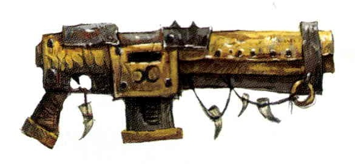
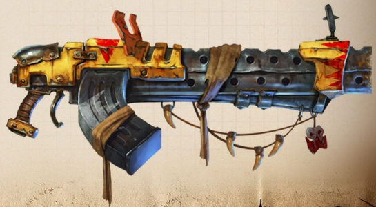
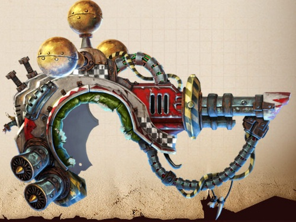

Simple gunz
Slugga

A Slugga is the Ork equivalent of a Space Marine Bolt Pistol. It is usually paired with a Choppa, and mobs of Boyz who carry the two are called Slugga Boyz. Due to the ramshackle nature of Ork weaponry, every Slugga is different, but most if not all Sluggas are semi-automatic, large calibre side arms. Though not as sophisticated as most other weapons used in the Imperium, Sluggas are no less effective than other, more advanced side arms when used correctly. As far as the melee-focused Ork holding it is concerned, the effectiveness of a Slugga is of little importance, as long as it is big and makes a loud noise when it fires.
Shoota
Shootas are the Ork equivalent to Space Marine Bolters. Essentially a machine gun (most even look like early World War I machine guns), the Shoota is the weapon any Ork looks at getting when he wants "moar dakka". Mobs of Slugga Boyz will often have a few Boyz armed with Shootas to add a little extra sting, but entire mobs of Shoota Boyz are also common; footslogging across the field sending torrents of bullets at any enemy in range. An Ork mob may trade in their Sluggas and Choppas for a Shoota if the technology and materials are available.
Big Shoota
A Big Shoota is a loud, heavy, large-calibre machine gun that bucks and sparks like crazy when the trigger is pulled. Big Shootas are usually bolted on vehicles - from Grot Tanks to Stompas for anti-personnel support, but sometimes a Shoota Boy manages to acquire a big shoota that gives his mob some real anti-infantry power, causing envy among other Boys. Big shootas are fed from chunky magazines of ammo by crank handles, motors or some other clever mechanisms. They are often "kustomized" to have multiple barrels, big crosshair sights, longer ammo belts and such.
Deffgun
Deffguns are heavy Ork weapons, fine examples of the Mek's craft that are made from all kinds of materials, mainly scavenged heavy weaponry of other races. Deffguns are so large they must be mounted on a special firing rig strapped to to an Ork's broad shoulders. No man could hope to fit into a Deffgun's rig without heavy augmetics or thick slabs of vat-grown muscle. This cumbersome rig is needed to absorb bone-breaking recoil each time the Deffgun is fired.